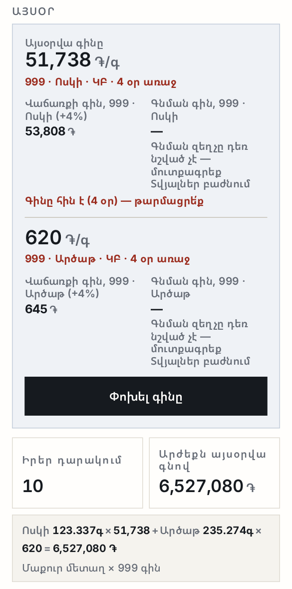
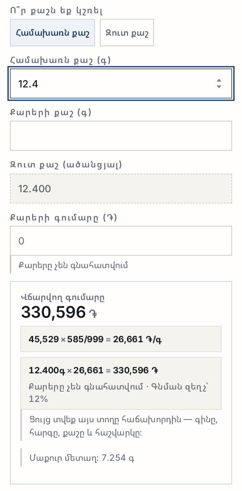
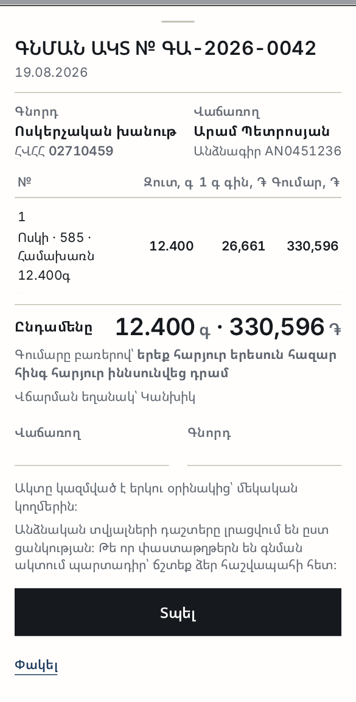
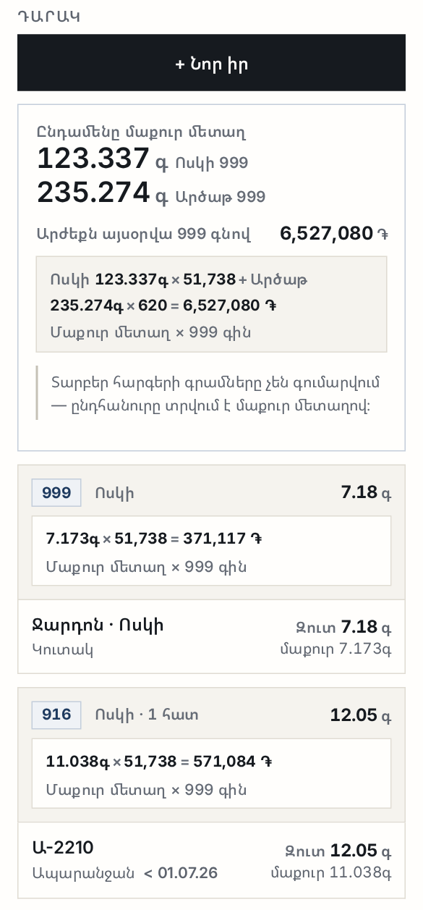
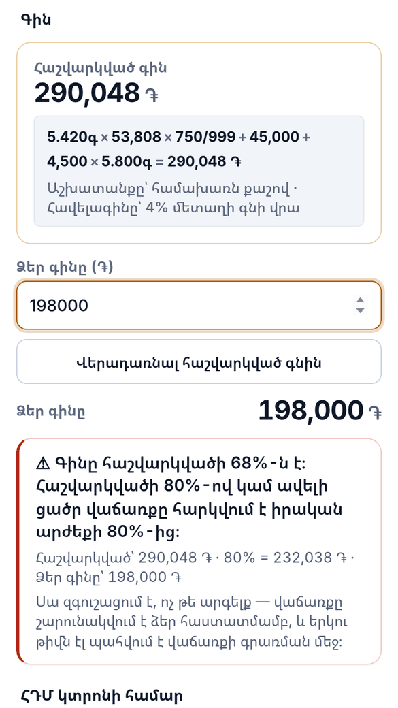
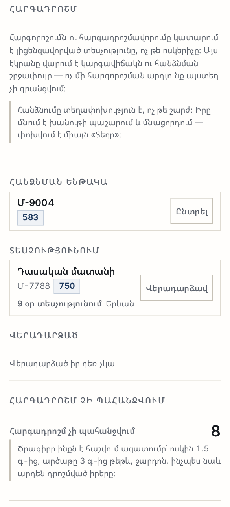
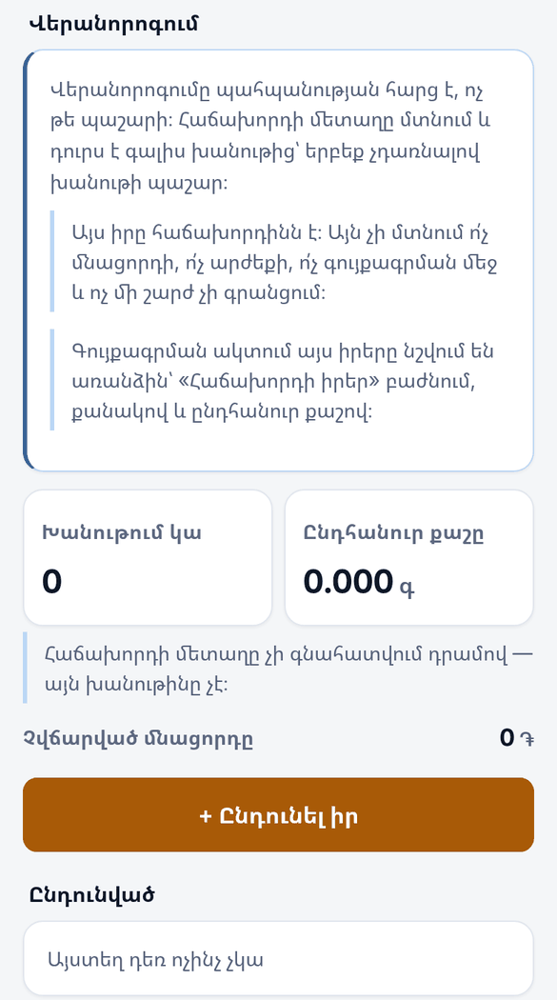

ԱրմՈսկի
Ոսկերչական խանութի հաշվառում
Դուք ջարդոն եք գնում վաճառասեղանի մոտ եկած մարդուց, և վաճառում պատրաստի իր։ 2026 թվականի հուլիսի 1-ից ձեր հարկը կախված է նրանից՝ կարո՞ղ եք փաստաթղթով ցույց տալ, թե որքան եք վճարել այդ մետաղի համար։
ԱրմՈսկին հենց այդ գրառումն է վարում՝ ամեն գրամի համար, գնման օրվանից մինչև վաճառքի օրը։ Եվ դա անում է այնպես, ինչպես խանութն է աշխատում՝ քաշով և հարգով, ոչ թե հատով։
Բացվում է ցուցադրական տվյալներով — կարող եք ամեն ինչ սեղմել առանց վախի։
Ո՞ւմ համար է
- Ոսկերչական խանութ, որը մետաղ է պահում դարակում և պահարանում։
- Խանութ, որը գնում է բնակչությունից — ջարդոն, կոտրված շղթա, հին մատանի։
- Խանութ, որը հանձնում է հարգադրոշմի և պետք է հիշի, թե ինչ որտեղ է։
- Խանութ, որը վերանորոգում է ընդունում և պետք է իմանա՝ ինչ կա իր մոտ, որը իրենը չէ։
- Ոսկի և արծաթ՝ 375-ից 999 հարգ։ 583-ը 585-ից առանձին է, ինչպես պետք է լինի։
Ո՞ւմ համար չէ։
- Եթե ձեզ պետք է միայն գին հաշվել և վաճառքը գրանցել — ARMGOLD-ը փոքր է և արագ։ Տարբերությունը գրված է այս էջի վերջում։
- Գրավատուն, ձուլարան, հարգորոշման տեսչություն — դրանք այլ գործ են և այլ լիցենզիա։
Ի՞նչ է անում
1. Օրվա գինը մեկ թիվ է. մնացած ամեն ինչ դրանից է բխում
Մուտքագրում եք 999 հարգի մեկ գրամի գինը։ Մնացած բոլոր հարգերը ծրագիրն ինքն է հաշվում՝ ըստ մետաղի պարունակության։ Կարտի վրա գրված է, թե որտեղից է թիվը և քանի ժամ առաջ եք այն դրել — որպեսզի հին գնով չվաճառեք։
Երկու կարգավորում կա։ Հավելագինը ձեր վաճառքի գինն է 999 գնի վրա։ Գնման զեղչը այն է, թե որքանով եք ցածր գնում ջարդոնը։

2. Գնում բնակչությունից՝ հաշվարկը հաճախորդի աչքի առաջ
Դնում եք իրը կշեռքին, ընտրում հարգը — և ծրագիրը ցույց է տալիս ամբողջ հաշվարկը մեկ տողով. 999 գինը, հարգի փոխարկումը, քաշը, արդյունքը։ Այդ տողը ցույց է տրվում հաճախորդին։ Վեճ չի մնում, որովհետև թվերը երևում են։
Քարերը գնման կողմում լռելյայն չեն գնահատվում, և դա գրված է հենց տողի տակ։

3. Եվ նույն տեղում՝ գնման ակտը
«Վճարել» սեղմելուն պես կազմվում է գնման ակտը՝ համարով, ամսաթվով, կողմերով, գումարը բառերով և երկու ստորագրության տեղով։ Տպվում է հեռախոսից։
Ամենակարևորը՝ վճարած գումարը դառնում է այդ մետաղի ինքնարժեքը և կապվում է ակտի համարին։ Հենց այդ կապն է, որ վաղը ցույց է տալիս՝ ինչ եք վճարել։

4. Մնացորդը՝ քաշով և հարգով
Դարակը խմբավորված է ըստ հարգի։ 585-ի գրամները և 750-ի գրամները իրար չեն գումարվում — դրանք տարբեր բան են։ Ընդհանուրը տրվում է մաքուր մետաղով, և արժեքի տակ գրված է հենց այն բազմապատկումը, որով ստացվել է։

5. Զեղչ տալիս եք — ծրագիրը զգուշացնում է, բայց չի արգելում
Երբ ձեր ձեռքով գրած գինը իջնում է հաշվարկվածի 80%-ից ցածր, էկրանին հայտնվում է զգուշացում՝ երկու թվով, որ ինքներդ տեսնեք տարբերությունը։
Սա արգելք չէ։ Վաճառքը շարունակվում է ձեր հաստատմամբ, և երկու թիվն էլ պահվում է վաճառքի գրառման մեջ։ Վաճառասեղանի մոտ հաճախորդին կանգնեցնելը ծրագրի գործը չէ։

6. Հարգադրոշմ՝ որպես կարգավիճակ, ոչ թե արդյունք
Հարգորոշումն ու հարգադրոշմավորումը կատարում է լիցենզավորված տեսչությունը, ոչ թե ոսկերիչը։ Ուստի ծրագիրը հարգորոշման արդյունք չի գրանցում — այն վարում է հանձնման շրջափուլը. ինչ է հանձնման ենթակա, ինչ է տեսչությունում և քանի օր, ինչ է վերադարձել։
Ազատված իրերը ծրագիրն ինքն է առանձնացնում՝ ոսկին 1.5 գ-ից թեթև, արծաթը 3 գ-ից թեթև, ջարդոնը, ինչպես նաև արդեն դրոշմված իրերը։ Դրանց բացակայող դրոշմը սխալ չէ։

7. Գույքագրում, որը ակտ է դառնում
Հաշվարկը կույր է. հաշվապահական քաշերը թաքնված են, մինչև ակտը կազմվի — որպեսզի թիվը չհուշի։ Իրը հաստատվում է մեկ հպումով՝ կա կամ չկա։ Ջարդոնի կուտակը դրվում է կշեռքին և կշռվում։
Խանութից դուրս գտնվող իրերը (տեսչությունում, արհեստանոցում, հաճախորդի մոտ) շրջանակում չեն և ակտում նշվում են առանձին — այլապես հանձնված մատանին կերևար որպես պակասորդ։
Ակտը տալիս է ամեն հարգի հաշվապահական և փաստացի քաշը, տարբերությունը գրամով և հատով, և տարբերության արժեքը դրամով։ Ներքևում՝ հաշվառողի և նյութական պատասխանատու անձի ստորագրությունները։

8. Վերանորոգումը պաշար չէ
Հաճախորդի մետաղը մտնում և դուրս է գալիս խանութից՝ երբեք չդառնալով ձեր պաշար։ Այն չի մտնում ո՛չ մնացորդի, ո՛չ արժեքի, ո՛չ գույքագրման մեջ։ Գույքագրման ակտում այդ իրերը նշվում են առանձին՝ քանակով և ընդհանուր քաշով, որպեսզի ստորագրողն իմանա, թե ինչ կա խանութում, որը խանութինը չէ։

Ի՞նչ դեռ չկա
Ծրագիրը երիտասարդ է, և ավելի ազնիվ է ասել, թե ինչ չկա, քան հետո հիասթափեցնել։
- «Ընդունում» էկրանը դեռ կառուցված չէ։ Մատակարարից ընդունումը քաշերով և ինքնարժեքով դեռ չի աշխատում. էկրանը բացվում է և հենց այդպես էլ գրում է։
- Սարքերի միջև համաժամացում չկա։ Տվյալները մնում են այն հեռախոսում կամ համակարգչում, որտեղ մուտքագրվել են։
- Լուսանկարներ չկան։ Իրի նկար չի պահվում. կա տեքստային նշում։
- CSV արտահանում չկա։
- ՀԴՄ-ի հետ կապ չկա և չի լինելու։ Կտրոնի համարը գրանցվում է որպես հղում, և ոչինչ ոչ մի տեղ չի ուղարկվում։
- Հարկային ռեժիմի ընտրություն և հարկի հաշվարկ չկան։
ARMGOLD-ը թե՞ ԱրմՈսկին
Ոսկյա ծրագիրը երկուսն է, և սա ամենահավանական շփոթությունն է այս կայքում։ Երկուսն էլ գին են հաշվում նույն բանաձևով։ Տարբերությունը մեկն է՝ պահեստ պահո՞ւմ է, թե ոչ։
ARMGOLD — գնի հաշվիչ
Մուտքագրում եք քաշը, հարգը և գրամի գինը — ստանում եք գինը։ Վաճառքը գրանցվում է, կա պարզ հաշվետվություն, կան իրի լուսանկարներ։ Հայերեն և անգլերեն։
Պահեստ չի պահում։ Մնացորդ, ընդունում, ինքնարժեք, գնման ակտ, գույքագրում, հարգադրոշմ — այս ամենը այնտեղ չկա։
ԱրմՈսկի — խանութի հաշվառում
Նույն գնի բանաձևը, բայց դրա շուրջ՝ ամբողջ խանութը։ Մնացորդ քաշով և հարգով, ամեն գրամի ինքնարժեքը, գնում բնակչությունից գնման ակտով, հարգադրոշմի հանձնում, գույքագրում ակտով, վերանորոգում, մատակարարների պարտքեր։ Հայերեն, անգլերեն և ռուսերեն։
Լուսանկարներ չի պահում։
Երկուսը առանձին ծրագրեր են. առանձին տվյալներով և առանձին մուտքով։ Մեկում մուտքագրված իրը մյուսում չի հայտնվում, և մեկից մյուսը տվյալ չի տեղափոխվում։
Ինչպե՞ս մտնել
Գաղտնաբառ պետք չէ։ Բացեք ԱրմՈսկին և ծրագիրն անմիջապես բացվում է ցուցադրական տվյալներով — մի քանի իր տարբեր հարգերով, ջարդոնի պաշար, մեկ իր՝ առանց փաստաթղթավորված ինքնարժեքի։ Ոչինչ չեք կոտրի։
Իրական խանութում աշխատելու համար մուտքի պաշտպանությունը դեռ ավելացված չէ։ Այս պահին ծրագիրը ցուցադրական է։
Որտեղի՞ց սկսել
- Այսօր — վերևում օրվա գինն է՝ 999 հարգի մեկ գրամի համար, և կողքին՝ որտեղից է վերցված ու երբ։ Դրանից են բխում վաճառքի և գնման գները։
- Դարակ — պաշարը՝ ըստ մետաղի և հարգի։ Ուշադրություն դարձրեք, որ տարբեր հարգերի գրամները չեն գումարվում. ընդհանուրը տրվում է մաքուր մետաղով։
- Վաճառք — ընտրեք իրը և նայեք գնի տակի տողին. ամբողջ բանաձևը՝ իր թվերով։ Փորձեք գինը ձեռքով իջեցնել շատ ցածր — կտեսնեք 80%-ի զգուշացումը։
- Գնում — ջարդոն գնելը վաճառասեղանի մոտ։ Հաշվարկը ցույց տվեք հաճախորդին, հետո տպեք գնման ակտը. հենց այդ ակտն է դառնում այդ մետաղի ինքնարժեքը։
- Ավելին → Գույքագրում — կույր հաշվառում և ստորագրելու պատրաստ ակտ։
Էկրանների նկարները վերցված են աշխատող ծրագրից՝ ցուցադրական տվյալներով։ Այս էջը հայերեն է. ուղեցույցը հասանելի է նաև անգլերեն և ռուսերեն։